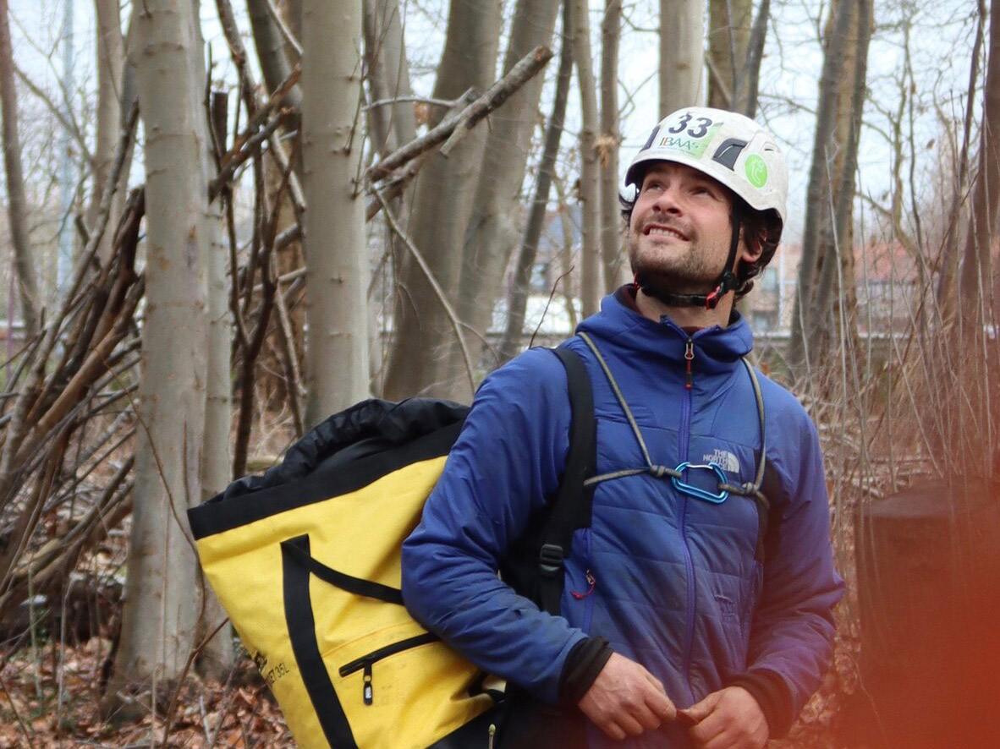

Wil u met Lode samenwerken?
Vraag vrijblijvend een offerte aan — Lode komt langs en geeft u eerlijk advies.
Lode Jans is gecertificeerd boomverzorger en oprichter van Stamgast Boombeheer. Zijn aanpak is eenvoudig: eerlijk advies, vakkundige uitvoering, en altijd met respect voor de boom.

Hoe Lode uitgroeide tot een van de meest gedreven boomverzorgers in de regio.
Niet elke boomverzorger werkt hetzelfde. Dit zijn de principes die Lode dagelijks in de praktijk brengt.
Ook als dat betekent dat er niets moet gebeuren. Lode verkoopt geen werk dat niet nodig is — dat is zeldzaam in de sector. En je boom heeft er bovendien niets aan.
Behoud en duurzaam beheer staan centraal.
Lode staat telkens zelf in voor de uitvoering, zodoende dat het vooropgestelde eindresultaat gegarandeerd blijft.
U weet altijd wat en waarom we iets gaan uitvoeren, met de boom telkens op de eerste plaats. Geen onaangename verrassingen.
Twee internationale certificaten die de kwaliteit en veiligheid van Lode's werk garanderen.
Internationaal erkend certificaat voor professionele boomverzorging. Garandeert technische kennis, veiligheid en kwaliteit van uitvoering. Behaald in 2017.
Specifieke expertise voor oude en waardevolle veterane bomen. Lode kan deze bijzondere bomen de gespecialiseerde zorg geven die ze verdienen.